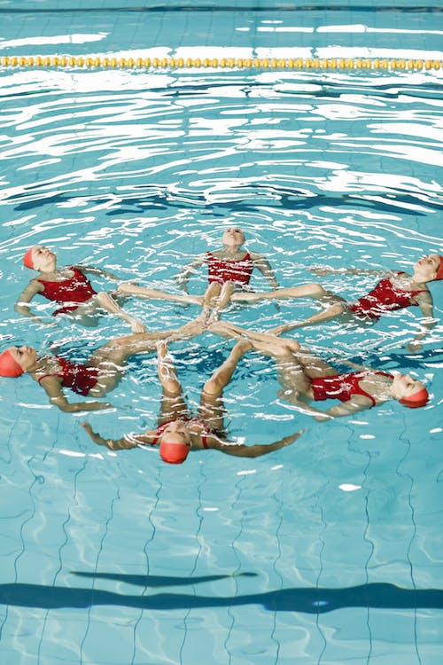

Es la capacidad de coordinar movimientos parciales del cuerpo entre si y en relación del movimiento total que se realiza para obtener un objetivo motor determinado. La persona es capaz de enlazar, integrar y combinar durante la acción motriz varios movimientos en forma simultánea y sincronizada.
El acoplamiento o sincronización es una capacidad coordinativa fundamental en el deporte, especialmente en disciplinas que requieren movimientos precisos y coordinados en conjunto con otros atletas.
En la natación artística, un equipo de nadadoras realiza una serie de movimientos coordinados y sincronizados en el agua al ritmo de la música. Cada nadadora debe ejecutar los movimientos de manera precisa y en perfecta sincronía con el resto del equipo, creando una coreografía fluida y estéticamente agradable.
La importancia en el deporte es que permite a los equipos realizar movimientos y secuencias de manera armoniosa, creando una imagen visualmente impactante. La sincronización en la natación artística no solo implica coordinar los movimientos individuales, sino también mantener una sincronía perfecta con las demás nadadoras del equipo logrando una total cohesión y uniformidad en la ejecución.
La sincronización también es importante en otras disciplinas como la gimnasia rítmica o artística, donde los equipos o individuos realizan rutinas coreografiadas con movimientos precisos y coordinados al ritmo de la música. La sincronización agrega un componente estético y expresivo a las actuaciones creando una conexión entre el movimiento del cuerpo y el ritmo musical.
Además de su aspecto estético, la sincronización en el deporte tiene beneficios funcionales. Permite a los equipos o individuos trabajar en conjunto, desarrollando habilidades de comunicación no verbal, confianza mutua y trabajo en equipo.
